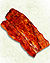

De: La Frikipedia, la enciclopedia extremadamente seria.
De: La Frikipedia, la enciclopedia extremadamente seria. De: La Frikipedia, la enciclopedia extremadamente seria.
El Calendario Maya es una arma creada e inventada por los mayas y algunos ejecutivos de microsoft para asustar al planeta entero la cual es una piedra muy grande con escritos extraños que dice que en el 2012 se acaba el mundo y bla bla bla, aunque esto no sea cierto varios científicos han querido probarlo sin éxito hasta el momento además de ser una de las más grandes reliquias de los mayas más visitadas en el mundo y algunas regiones de china la cual se volvió tan famosa porque tiene escritos en simbolitos raro pero que se cree que tiene predicciones escritas bastantes extrañas y este consiste en 3 diferentes cuentas de tiempo que transcurren alfabética y simultáneamente:
El calendario maya sivil halá es el que actualmente usamos para medir el tiempo en el que el mundo le da vuelta al sol y a otros planetas sin vida de por medio y es de los calendarios más importantes en la historia de el origen de la tierra tallada específicamente en un material piedrítico con símbolos mayas que solo los mayas entendían y así fue como se dio origen al calendario maya y al Copyright.
El calendario maya, según Adán y Eva y pasando por la olmeca, chichimeca entre otros, sin embargo este calendario es propio de la civilización maya (para eso es el copyright) y consta de una selecta mezcla de dibujos, jeroglíficos y una pizca de sal para sazonar toda la piedra que se mostraran después en este mismo artículo y por este mismo canal...
| Frikcionario - Hey IP anónima esta página o sección es parte del Frikcionario o tiene palebras a manera de diccionario así que debes saberte algunas letras del abecedario para poder editar. |
Este artículo contiene escritos mayas así que no todas las personas (excepto los mayas) lo entenderán asi que ahora se muestra un diccionario en orden analfabético para que aclares las dudas que aún no tienes:
El sistema de calendario Tolttequin consta de 261 días(Kienes) (y no 260 como dice la wikipedia) además tiene 20 meses combinados con 13 numerales(Muarismos) asi con tantos meses tienen más trabajo las modelos que hacen calendarios, además de que son más vendidos ya que siempre hay salidos de por medio. El calendario Tolttequin se combina con el calendario halá y con un poco de especias y sal para sazonar ya que el calendario halá tiene 365 días a 18 meses(unuales) de plazo garantizado de 20 días cada uno y cinco días más denominados Weyey para formar un ciclo que dura 52 halá's o 18.980 kienes.
La cuenta alargada era utilizada para distinguir cuando ocurrió alguna fecha importante como el cumple años del rey o la reyna... o el de la reyna, esto con respecto a los otros dos calendario el tolttequin y el halá.El sistema es básicamente vigesimal (20 o creó que 30) y cada unidad representa un multiplo de 20... o 30 dependiendo de su posición estimulados por: Kamasutra o Mental, con la importante exepción de la segunda posición que representa: 18 x 20 =365(eran buenos para los calendarios... no para las matemáticas). Algunas inscripciones mayas muestran que la cuenta alargada están suplementadas por lo que se llama serie lunar, otra forma de información que se utiliza solo observando la luna... ya que no podían ver hacia el sol.
Y cuando no había luna o tenían durmiendo a la roca en donde esta el calendario los mayas también hacían ciclos con el sol o simplemente con el google earth que acosa de cerca a todo el mundo aunque el más famoso(para ellos) es medir tiempo con Venus que era una señora que median el tiempo con ella, cada que se le caía un diente era un día (también funcionaba con la caída de sus pechos.
El Tolttequin ("la cuenta desesperada de los días") cuenta con 261 días y bien se han sugerido que tenga 260 días para que no tenga números impares y esta relacionado con la duración de la copulación humana: 2:61 dos minutos sesenta y un segundos y 260 no completa y dicen que este sistema siempre se relaciona con Venus. Este se usa para apuntar las celebraciones religiosas, pronosticar las lluvias o si la bolsa de Nueva York baja o sube aunque también tiene algo de oráculo ya que les dice el destino a las personas con una estadística de 1 en 100 millones.
Cuenta en ciclos de 13 meses de veinte días cada uno. Ordenados sustantivamente, los nombres de los días y los meses traducidos al maya:
| Nº | Días solares (Kien) | Meses (Unal) | Nº | Días solares (Kien) | Meses (Unal) |
|---|---|---|---|---|---|
| 1 | Primix | Pon | 11 | Zubuen | Zac |
| 2 | Like | Uow | 12 | Elo | Ceh |
| 3 | Aka'bal | Zipy | 13 | Benid | Mac |
| 4 | K'ana | Zope | 14 | Mix | Kakin |
| 5 | Chikichikichan | Tezep | 15 | Meno | Women |
| 6 | Killy | Xul | 16 | Ric | Pak |
| 7 | Maniky | Yaxkin | 17 | Bakan | Kayak |
| 8 | Lamet'o | Mol-a | 18 | Elz'tab | Comúnko |
| 9 | Muluk | Chin | 19 | wakak | weyey |
| 10 | Hokey | Grax | 20 | Ajuaco | Hoyganio |
Pero estos elementos son de el ya antiguo calendario maya, pero hace algun tiempo algun inadaptado social conllevo a hacer un nuevo calendario maya, pero esta vez no se hizo en una piedra sino en una aplicación de Facebook...
No. |
Nombre Moderno Clásico reconstruido |
Ejemplo de glifo |
Nombre del día |
No. |
Nombre Moderno Clásico reconstruido |
Ejemplo de glifo |
Nombre del día | ||
|---|---|---|---|---|---|---|---|---|---|
| 01 | Primix | 1 | Primix | 11 | Zubenbajan | Zubuen | |||
| 02 | Like(Facebook) | Like | 12 | Elio | Elo | ||||
| 03 | Aka'ballo | Aka'bal | 13 | Venido | Benid | ||||
| 04 | Kk'ana | K'ana | 14 | Mil | 1,000 | Mix | |||
| 05 | 4chan | chikichikichan | 15 | Men | Meno | ||||
| 06 | Kill | Killy | 16 | Rib(Costillas) |  | Ric | |||
| 07 | Maniak | Maniky | 17 | biken | bakan | ||||
| 08 | Lamat'o | Lamet'o | 18 | El'tab | Elz'tab | ||||
| 09 | Molok | Muluk | 19 | Waka | Wakak | ||||
| 10 | Hokei | Hokey | 20 | Ajua | Ajuaco | ||||
|
NOTAS:
| |||||||||
El Halá mide el año solar y no la mensual como algunas mujeres creen este calendario divide en 18 meses y 20 días aunque nunca le saca solución a eso y los ultimos 5 días del año que son llamados weyey se dicen que eran los más indeseables porque eran vacacionales y para divertirse. El primer día del mes se representa con un 1 (cuanto ingenio...) ya que era el comienzo por donde empezaba el empiezo del mes. Este calendario era plagiado hecho a base del calendario religioso, marcaba los días como todos los demás y lo que también llamaban ritmos comunitarios que en ese tiempo así se les llamaba a las fiestas.Se habla de exactitud del plagio al calendario maya pero no tiene nada que ver nada con el ni con el calendario de Scarlett Johansson y no hay evidencia de correcciones, ajustesy este todavia no revolucionaba el mundo con la palabra "meses" sino que ponia como etapas solares del sol.
Así como en otros calendarios existen nombres diferentes para ponerle a un calendario incluso si no tiene nada que ver y también existen nombres para ponerle a periodos de tiempo llamándolos: periodos de tiempo y los mayas también tenian nombres especificos para ponerle a las jornadas de tiempo gracias a su enriquecido sistema de multiplicación cuadragesimal a computadora de piedra. La unidad básica para medir un día no era contando las horas... sino más fácil mirando al sol hasta que se escondiera y a eso le llamaban día solar.
Autor(es):